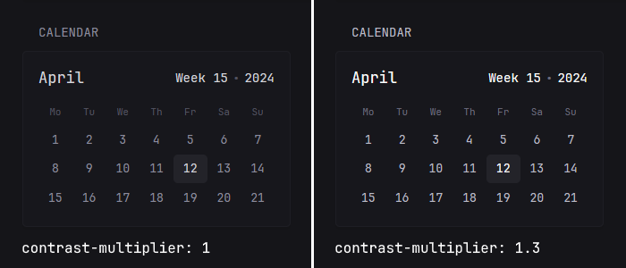

Document, Branding, Theme
Document
If you want to insert custom HTML into the <head> of the document for all pages, you can do so by using the document property. Example:
document:
head: |
<script src="/assets/custom.js"></script>
Branding
You can adjust the various parts of the branding through a top level branding property. Example:
branding:
custom-footer: |
<p>Powered by <a href="https://github.com/glanceapp/glance">Glance</a></p>
logo-url: /assets/logo.png
favicon-url: /assets/logo.png
app-name: "My Dashboard"
app-icon-url: "/assets/app-icon.png"
app-background-color: "#151519"
Properties
| Name | Type | Required | Default |
|---|---|---|---|
| hide-footer | bool | no | false |
| custom-footer | string | no | |
| logo-text | string | no | G |
| logo-url | string | no | |
| favicon-url | string | no | |
| app-name | string | no | Glance |
| app-icon-url | string | no | Glance's default icon |
| app-background-color | string | no | Glance's default background color |
hide-footer
Hides the footer when set to true.
custom-footer
Specify custom HTML to use for the footer.
logo-text
Specify custom text to use instead of the "G" found in the navigation.
logo-url
Specify a URL to a custom image to use instead of the "G" found in the navigation. If both logo-text and logo-url are set, only logo-url will be used.
favicon-url
Specify a URL to a custom image to use for the favicon.
app-name
Specify the name of the web app shown in browser tab and PWA.
app-icon-url
Specify URL for PWA and browser tab icon (512x512 PNG).
app-background-color
Specify background color for PWA. Must be a valid CSS color.
Theme
Theming is done through a top level theme property. Values for the colors are in HSL (hue, saturation, lightness) format. You can use a color picker like this one to convert colors from other formats to HSL. The values are separated by a space and % is not required for any of the numbers.
Example:
theme:
# This will be the default theme
background-color: 100 20 10
primary-color: 40 90 40
contrast-multiplier: 1.1
disable-picker: false
presets:
gruvbox-dark:
background-color: 0 0 16
primary-color: 43 59 81
positive-color: 61 66 44
negative-color: 6 96 59
zebra:
light: true
background-color: 0 0 95
primary-color: 0 0 10
negative-color: 0 90 50
Available themes
If you don't want to spend time configuring your own theme, there are several available themes which you can simply copy the values for.
Properties
| Name | Type | Required | Default |
|---|---|---|---|
| light | boolean | no | false |
| background-color | HSL | no | 240 8 9 |
| primary-color | HSL | no | 43 50 70 |
| positive-color | HSL | no | same as primary-color |
| negative-color | HSL | no | 0 70 70 |
| contrast-multiplier | number | no | 1 |
| text-saturation-multiplier | number | no | 1 |
| custom-css-file | string | no | |
| disable-picker | bool | false | |
| presets | object | no |
light
Whether the scheme is light or dark. This does not change the background color, it inverts the text colors so that they look appropriately on a light background.
background-color
Color of the page and widgets.
primary-color
Color used across the page, largely to indicate unvisited links.
positive-color
Used to indicate that something is positive, such as stock price being up, twitch channel being live or a monitored site being online. If not set, the value of primary-color will be used.
negative-color
Oppposite of positive-color.
contrast-multiplier
Used to increase or decrease the contrast (in other words visibility) of the text. A value of 1.3 means that the text will be 30% lighter/darker depending on the scheme. Use this if you think that some of the text on the page is too dark and hard to read. Example:

text-saturation-multiplier
Used to increase or decrease the saturation of text, useful when using a custom background color with a high amount of saturation and needing the text to have a more neutral color. 0.5 means that the saturation will be 50% lower and 1.5 means that it'll be 50% higher.
custom-css-file
Path to a custom CSS file, either external or one from within the server configured assets path. Example:
theme:
custom-css-file: /assets/my-style.css
[!TIP]
Because Glance uses a lot of utility classes it might be difficult to target some elements. To make it easier to style specific widgets, each widget has a
widget-type-{name}class, so for example if you wanted to make the links inside just the RSS widget bigger you could use the following selector:.widget-type-rss a { font-size: 1.5rem; }In addition, you can also use the
css-classproperty which is available on every widget to set custom class names for individual widgets.
disable-picker
When set to true hides the theme picker and disables the abiltity to switch between themes. All users who previously picked a non-default theme will be switched over to the default theme.
presets
Define additional theme presets that can be selected from the theme picker on the page. For each preset, you can specify the same properties as for the default theme, such as background-color, primary-color, positive-color, negative-color, contrast-multiplier, etc., except for the custom-css-file property.
Example:
theme:
presets:
my-custom-dark-theme:
background-color: 229 19 23
contrast-multiplier: 1.2
primary-color: 222 74 74
positive-color: 96 44 68
negative-color: 359 68 71
my-custom-light-theme:
light: true
background-color: 220 23 95
contrast-multiplier: 1.1
primary-color: 220 91 54
positive-color: 109 58 40
negative-color: 347 87 44
To override the default dark and light themes, use the key names default-dark and default-light.